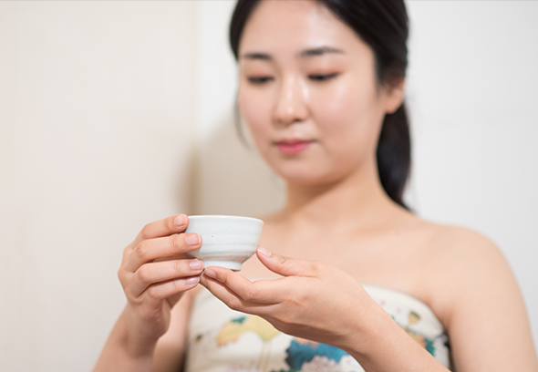
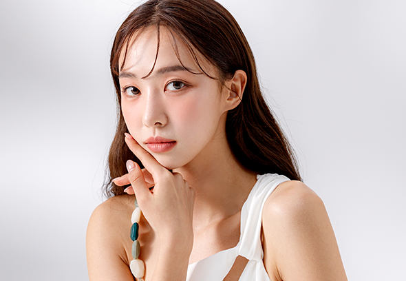
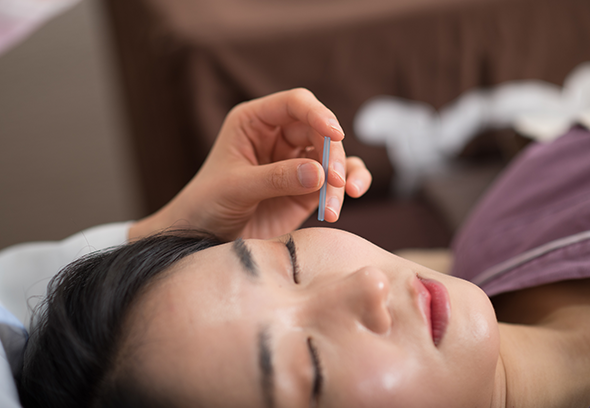

体と心のトータルケア
韓方美容とは?

01
肌と体の全般的な診断お顔は心と体を映し出す鏡であると考えます。お顔と体は密接な関係が有り、体の状態を整える事が大切です。それでお肌だけでなくお体の

02
全身の循環と顔色の改善韓方美容治療は肌のトラブルにおいてその原因を 治療する韓方薬と全身循環を円滑にさせる鍼治療を用いてお顔の状態を改善させます。

03
肌の再生力を高める鍼治療自然な美しさを求め、ニキビからアンチエイジングまで肌の全般にかけた診療を行っています。また、体の気血循環を改善させて肌の再生力